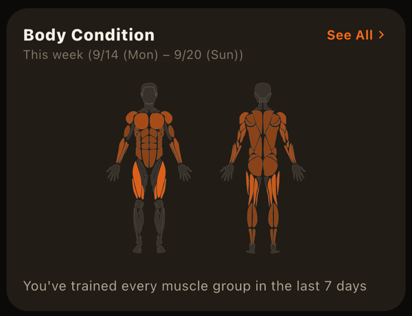

"How many sets should I do for chest each week?" is a question almost everyone runs into once they've been training for a while. There are several ways to measure how much you train, but counting weekly sets per muscle group is one of the simplest and easiest to compare.
Why count per week and per muscle
Looking at a single workout, it's natural for chest day to have lots of chest sets and leg day to have lots of leg sets. How much stimulus a muscle is really getting shows up better in the weekly total. And volume calculated as weight × reps varies by orders of magnitude between exercises, so it isn't well suited to adding up different exercises. Set counts, on the other hand, can be totaled per muscle across exercises.
The commonly cited range
In hypertrophy research and coaching, roughly 10–20 sets per muscle group per week is a frequently cited range. But it's only a starting point:
- Beginners often progress well on around 5–10 sets per week
- The longer you've been training, the less the same amount tends to move the needle
- How much you can recover from depends on sleep, diet, work stress, and the season of your life
More isn't always better — if recovery can't keep up, extra volume backfires. Adjusting based on your own records matters more than hitting a particular number.
What to watch out for when counting
- Don't count warm-ups: including light sets makes it look like you did more than you really did
- Count sets taken close to failure: a light set with plenty left in the tank is a very different stimulus. Using RPE 7 or higher as a cutoff makes counting easier
- Exercises that hit several muscles: the bench press works triceps and shoulders as well as chest. How you count secondary muscles changes the totals, so use the same rule every time
- Don't cram it into one day: 15 weekly sets split over two or more sessions are easier to keep high-quality than 15 in one session
Finding the amount that works for you
Start by checking your current weekly sets from your log, keep training at that level for a few weeks, and see whether your weights or reps are going up. If they are, stay there. If you've stalled and feel well recovered, try adding 2–3 sets per muscle per week. If fatigue lingers and your numbers start slipping, that's a sign to cut back.
Lining up sets by muscle also reveals imbalances. Lots of chest and arms but little back or legs is surprisingly easy to miss on your own.
On LiFTY's Home screen, "Body Condition" shows this week's sets for each body part and the days since you last trained it on a body diagram. In the Analysis tab's "Body Part" view, you can look back at set trends for each body part and which exercises they came from over any period. Sets marked as warm-ups are excluded from both (Home Screen and Record Calendar, Using the Analysis Tab).

Related articles
- What Is Training Volume? How to Calculate It and Beat Plateaus
- How to Structure Warm-Up Sets (and Why Not to Count Them)
- What Is RPE? How to Use It in Strength Training
LiFTY totals your weekly sets per body part on the Home screen automatically, counting only working sets so you can spot imbalances. No account needed to start right away.
Download on the App Store